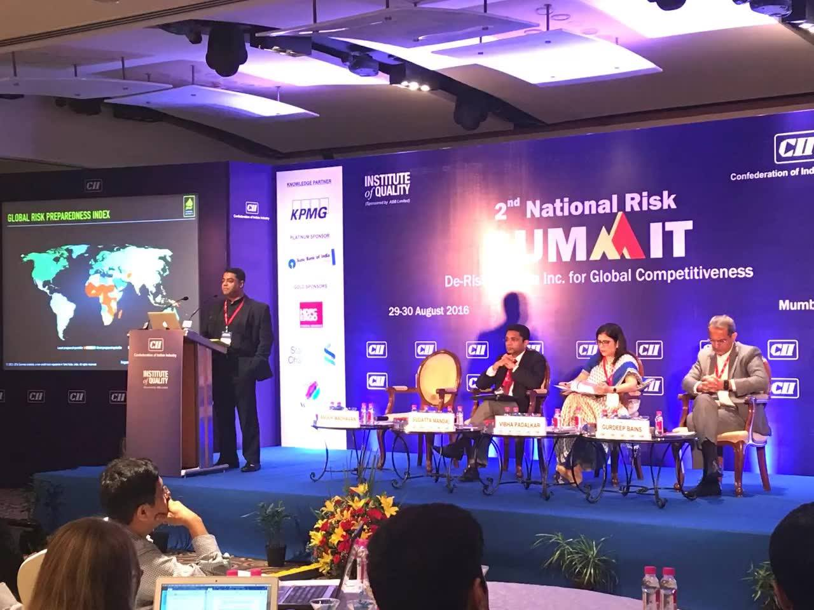

Alummoottil
10K likes • 10K followers
Message
Like
Search
Posts
About
Mentions
Reviews
Followers
Photos
More
Videos
Groups
Likes
Events
...
Videos

Survival Instincts founder Anoop Madhavan was an invited speaker at
7 years ago · 9.7K views
Survival Instincts founder Anoop Madhavan was an invited speaker at
7 years ago · 9.7K views
Survival Instincts founder Anoop Madhavan was an invited speaker at
7 years ago · 9.7K views
Survival Instincts founder Anoop Madhavan was an invited speaker at
7 years ago · 9.7K views
Survival Instincts founder Anoop Madhavan was an invited speaker at
7 years ago · 9.7K views
Survival Instincts founder Anoop Madhavan was an invited speaker at
7 years ago · 9.7K views